A practical guide to making AI actually understand your company — from first session to full deployment.
No spam. Instant access. Unsubscribe anytime.
The course is ready. Start from the beginning or jump to any module.
You're a business owner or manager. You've used ChatGPT, Claude, or some other AI tool. You've seen the potential. But you've also hit the wall — the wall where every conversation starts from scratch, where the output sounds generic, where you spend more time explaining context than getting work done.
You've heard about Claude Code. Maybe someone on your team mentioned it. Maybe you saw a post about it. But every tutorial you've found assumes you're a software developer who lives in a terminal.
You're not. And that's fine.
This course is for people who run businesses, not people who write code. We'll use the Claude desktop app, not the command line. We'll talk about proposals, client emails, and brand voice — not APIs and databases. And we'll be honest about where the complexity lives, so you can decide what to tackle yourself and what to get help with.
By the end, you'll have a working Claude Code setup that knows your business, connects to your tools, and produces output your team can actually use.
Let's get into it.
Six modules. Each one builds on the last. Start from the beginning — or jump to the module that matches where you are right now.
Not wrong as in "bad." Wrong as in limited.
If you've been using ChatGPT, Claude, or any other AI tool, you've probably been doing this: open a chat window, paste some text, type a prompt, get a response, copy it somewhere else. Repeat.
That works for quick questions. It works for brainstorming. But it has a ceiling.
The ceiling is this: every time you start a new chat, the AI has no idea who you are. It doesn't know your company, your clients, your brand voice, your processes, or your pricing. You start from zero every single time. And you spend half your time explaining context instead of getting work done.
Claude Code removes that ceiling.
Claude Code is a version of Claude that works directly on your computer. Instead of living inside a chat window on a website, it sits on your machine — with access to your actual files, your actual documents, your actual business information.
That changes everything.
Regular Claude is like texting a smart friend. You send a message, they reply. But they can't see your screen, can't open your files, and forget the conversation once you close the tab.
Claude Code is like hiring an assistant who sits at a desk next to you. They can open your folders. Read your documents. Write drafts and save them where you need them. And they remember the instructions you gave them yesterday.
Here's the practical difference:
You open claude.ai, paste your client's brief into the chat, explain your brand voice, explain your pricing, explain your process, and ask for a proposal draft. You get a decent response. You copy it into Google Docs. Tomorrow, you do it all over again — re-explaining everything from scratch.
You open the app, point it at your business folder where your brand guide, pricing, templates, and client info already live, and say "draft a proposal for Sarah's project." Claude reads your documents, follows your format, uses your pricing, matches your tone, and saves the draft in the right folder. Tomorrow, you just say the name.
The difference isn't intelligence. It's context.
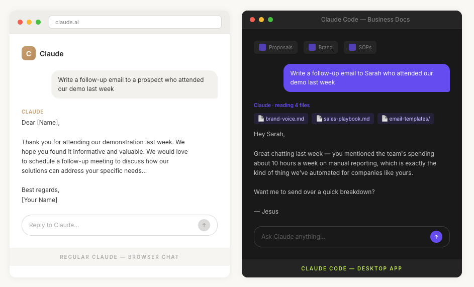
This is the most common misconception. And it's understandable.
Claude Code was originally built for software engineers. The name has "Code" in it. The early marketing showed terminals and programming languages. If you saw it a year ago, you probably thought "that's not for me."
But here's what happened: the same technology that makes Claude Code powerful for developers — reading files, following project-specific instructions, connecting to tools, remembering context — turns out to be exactly what business owners need too.
Writing code and running a business have more in common than you'd think:
Today, Claude Code works just as well for drafting proposals as it does for writing software. For creating SOPs as it does for building features. For managing client communication as it does for managing code.
The "Code" in the name is a bit misleading now. Think of it as "Claude, but it actually knows your business."
Claude Code requires a paid Claude plan. Here's what's available:
Claude Pro ($20/month) — This is where most individuals start. You get access to Claude Code through the Claude desktop app. It includes a generous usage allowance for everyday work — writing, research, document creation, analysis. For a single business owner or manager exploring AI, this is enough.
Claude Team ($30/month per person) — For teams. Everyone on your team gets their own Claude Code access, and you can share projects and instructions across the group. If you're planning to roll this out to more than just yourself, this is the plan.
Claude Enterprise (custom pricing) — For larger organizations that need admin controls, security policies, and compliance features. If you have 20+ people or work in regulated industries, this is where that conversation starts.
The key thing: you don't need the most expensive plan to get real value. Start with Pro. You can always upgrade later.
The Claude desktop app (recommended for you) — This is the easiest way to start. Download the Claude app for Mac or Windows. Once installed, you can give Claude access to folders on your computer, and it will read and work with your files directly. No terminal. No command line. Just the app.
The terminal / command line — This is how developers typically use Claude Code. You type commands in a text-based interface. We'll mention this for context, but it's not required. Everything in this course works through the desktop app.
IDE extensions (VS Code, JetBrains) — These are for software development environments. If your dev team uses Claude Code, this is likely how they access it. Not relevant for this course.
This is the part that matters more than any subscription or app.
Claude Code isn't a chatbot you ask questions to. It's an assistant you delegate work to. That shift — from asking to delegating — is what separates people who get 10% more productive from people who get 10x more productive.
"Can you write me a follow-up email?"
"Read the meeting notes from yesterday's call with Sarah, check our proposal template, and draft a follow-up email that references what she said about timeline concerns and includes our standard next-steps section."
The first prompt gives you a generic email. The second gives you a ready-to-send email that sounds like you wrote it — because Claude has the context to actually do the work, not just generate text.
Throughout this course, we'll build that delegation muscle step by step.
By the time you finish all six modules, here's what your setup will look like:
That's where we're going. Let's start with your first session.
Next up: Module 2 — Your First Session. We'll open the app, give Claude access to your files, and get your first real output in under 10 minutes.
No theory. No background. Just results.
By the end of this module, you'll have opened Claude Code, pointed it at a real folder on your computer, and gotten output that's actually useful for your business. Not a demo. Not a toy example. Something you can send, use, or build on today.
If you haven't installed it yet, download the Claude app from Anthropic's website. Install it like any other app — drag it to Applications on Mac, or run the installer on Windows.
Open the app. Sign in with your Claude account (the same one you use on claude.ai).
You'll see a familiar chat interface. This is normal Claude — the same experience you've used before. But we're about to unlock the part that makes it different.
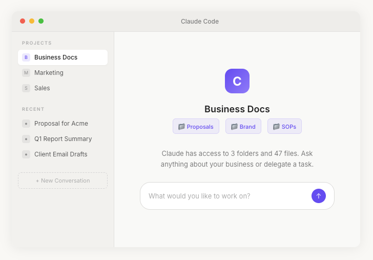
This is the key step. This is where Claude Code becomes Claude Code.
In the app, look for the option to add a folder or give Claude file access. The exact location may vary depending on your app version, but it's typically in Settings or in the conversation window itself — you'll see an option to "Add folder" or "Connect files."
Pick a folder on your computer that contains real business documents. Good options:
Don't pick something sensitive yet (we'll cover data policies later). Pick something you work with regularly — something where you'd love an assistant who already knows the content.
Once you grant access, Claude can now read every file in that folder. Not upload it to the internet — read it locally, on your machine, in real time.
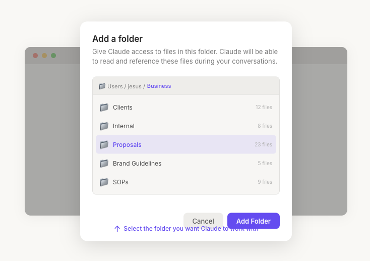
Now let's do something useful. Here are three prompts you can try right now, depending on what folder you connected:
Claude will read your actual proposals — not guess what a proposal should look like. It'll tell you your patterns, your structure, your pricing format. You'll probably learn something about your own process you hadn't noticed.
This is how Claude starts learning your voice. Not from a generic template — from your actual writing.
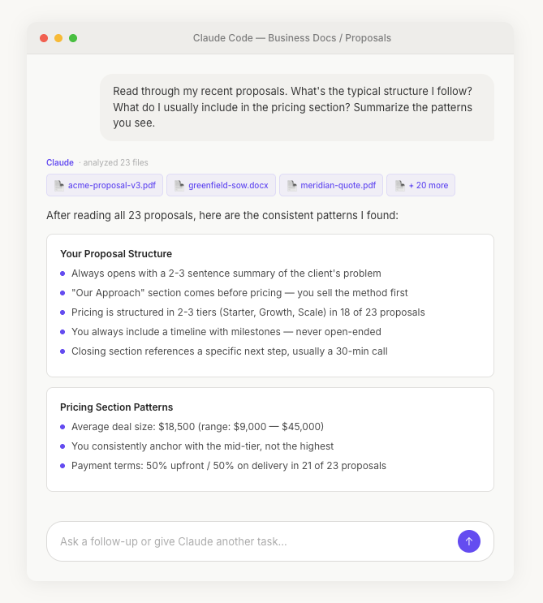
Claude just built you a brand voice guide from your own work. Most companies pay thousands for this. You got a working first draft in 30 seconds.
Take a second to notice what was different about that interaction compared to regular Claude chat.
You didn't paste anything. No copying from documents, no "here's some context," no walls of text in the chat window. Claude went and read the files itself.
You didn't explain your business. No "we're a marketing agency that..." or "our typical client is..." Claude figured that out from your actual documents.
The output was specific to you. Not generic advice. Not "here's what a typical proposal looks like." Your structure. Your voice. Your patterns.
That's the shift. Claude Code doesn't need you to be the middleman between your business and the AI. It goes straight to the source.
Analysis is impressive. But the real value is in output — things you can use.
Notice the pattern: you're not asking Claude to imagine what your business does. You're asking it to work with what's already there. Read this, analyze that, create something new based on what you found.
That's delegation. And it only works when Claude has access to your files.
You'll notice that Claude asks for permission before doing certain things. Reading a new folder, creating a file, modifying an existing document — it checks with you first.
This isn't a bug. It's a feature you'll grow to appreciate.
Claude Code operates on a principle of controlled access. You decide what it can see. You decide what it can change. You approve actions before they happen. Nothing happens behind your back.
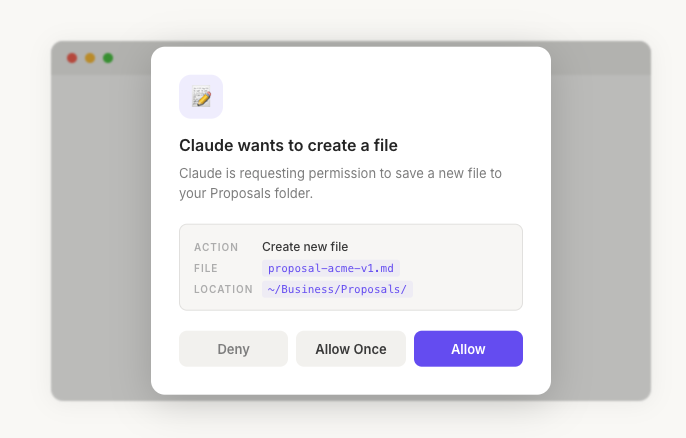
In regular Claude, every conversation starts fresh. You ask a question, get an answer, and that's it. The next conversation has no memory of the last one.
In Claude Code, you're working inside a project context. As long as you're in the same folder, Claude remembers the files it's read, the instructions you've given, the patterns it's identified, and the work it's produced.
This means your second conversation in the same folder is better than the first. And the tenth is dramatically better than the second. Claude builds understanding over time — not just from the files, but from your corrections and preferences.
"That proposal was too formal — we're more casual with this client."
"Good email, but we always include pricing in the first follow-up, not the second."
"Don't use bullet points in client-facing documents. We write in paragraphs."
Every correction makes the next output better.
Before moving to Module 3, here are five things you can do right now that will save you real time this week:
Audit your own writing. Point Claude at your sent emails or published content and ask: "What's my communication style? What's inconsistent?" You'll get a mirror you've never had.
Build a template from your best work. Find the proposal or email you're most proud of. Ask Claude to reverse-engineer it into a reusable template with placeholders.
Summarize a messy folder. That folder with 47 files from the last project? Point Claude at it and say "What's in here? Organize it by topic and tell me what's important."
Draft a process document. Ask Claude to read how you communicate with clients and produce a "How We Work With Clients" one-pager. Share it with your team.
Write next week's content. Point Claude at previous social posts or newsletters and say "Write three LinkedIn posts in the same voice, about [topic]."
None of these require any technical setup beyond what you just did — open the app, connect a folder, talk to Claude.
Two modules in, and you've already installed Claude Code, connected it to real business files, gotten AI output based on your actual work, and experienced the difference between chatting with AI and delegating to AI.
This is the foundation. The quick wins are real — you can use this setup today and get value tomorrow.
But there's a catch.
Right now, Claude is learning about your business every session by re-reading your files. It works, but it's like hiring someone who needs to be re-briefed every morning. They're smart, they catch on fast, but they start cold every time.
In Module 3, we'll fix that.
Next up: Module 3 — The CLAUDE.md File. Teaching Claude who your business is — permanently.
Here's what happens the first time most business owners try Claude Code on real work.
They open the app. They point it at a folder — maybe their company docs, their proposals, their marketing materials. They ask it to draft something: a client email, a proposal, a social media post.
Claude delivers something that looks... fine. Grammatically correct. Professional. But wrong.
Wrong tone. Wrong offer structure. A proposal that doesn't match how your team prices projects. A client email that sounds like it was written by a Fortune 500 marketing department — not a 15-person agency in Miami.
The tool works. But it doesn't know your business.
That's the gap a CLAUDE.md file fills.
CLAUDE.md is a simple text file you create and place in a folder on your computer. Every time Claude Code works inside that folder, it reads this file first — before it reads anything else, before it produces any output.
Think of it as a cheat sheet for a new hire. The way you'd brief someone on their first day: "Here's who we are. Here's how we talk to clients. Here's what we never do. Here's what matters."
Except this hire has perfect memory, never forgets your instructions, and follows them every single time.
No CLAUDE.md? Claude treats your business like any business. Generic language, generic assumptions, generic output.
A good CLAUDE.md? Claude works like someone who's been at your company for a year.
You don't need a perfect file to start. You need a real one.
Open any text editor — even Notes or TextEdit works. Create a new file. Name it CLAUDE.md. Save it in the folder where you keep your work documents. And write something like this:
That's it. Save it. Open Claude Code in that folder. Ask it to write a client email, draft a proposal, or create a social post.
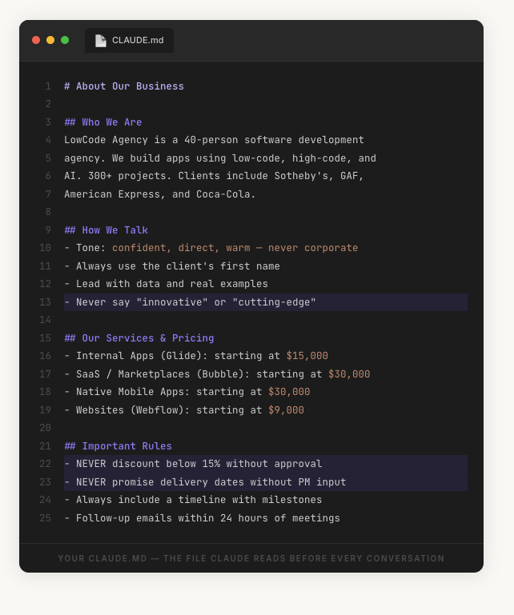
The difference is immediate.
Same prompt. Same Claude model. The only difference: one folder has a CLAUDE.md, the other doesn't.
The prompt: "Write a follow-up email to a prospect who attended our demo last week but hasn't responded."
Dear [Name],
Thank you for attending our demonstration last week. We hope you found it informative and valuable. We would love to schedule a follow-up meeting to discuss how our solutions can address your specific needs. Please let us know your availability at your earliest convenience.
Best regards,
[Your Name]
Hey Sarah,
Great chatting last week — you mentioned the team's spending about 10 hours a week on manual reporting, which is exactly the kind of thing we've automated for companies like yours.
I put together a quick breakdown of what that would look like. No pressure — just wanted to give you something concrete to look at.
Want me to send it over, or would a 15-minute call be easier?
— Jesus
Same tool. Same AI model. One sounds like a machine. The other sounds like your best salesperson on a good day.
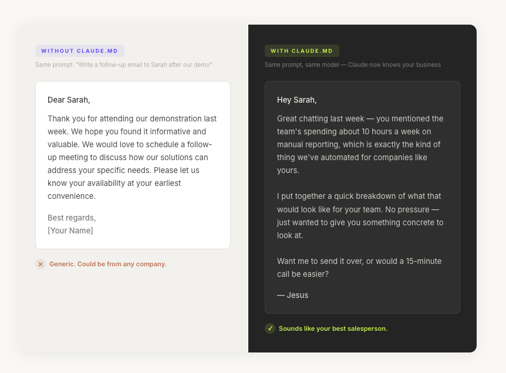
The 15-minute version gets you started. But a CLAUDE.md that actually performs across your business needs more depth.
Not just what you do — how you think about what you do. Your mission, your positioning, how you're different from competitors. When Claude understands your positioning, it stops writing generic copy and starts writing copy that reinforces your brand with every sentence.
How do you talk to clients vs. prospects vs. your team? What words do you use? What words do you avoid? This is the section most people underestimate. Your brand voice is the difference between "Claude writes decent emails" and "Claude writes emails I can send without editing."
What do you sell? How is it structured? What are the typical packages? How do you handle objections? When Claude knows your sales playbook, it can draft proposals and follow-ups that match how your team actually sells.
Who does what? Who handles client communication? Who approves proposals? This matters when Claude drafts anything involving your team — intros, handoffs, project updates.
Who are your typical clients? What industries? What language do they use to describe their problems? When Claude knows your clients, it writes to them — not at them.
How do you onboard a new client? What's the workflow for a project kickoff? Claude can help draft, document, and follow these processes — but only if it knows they exist.
This section is often the most valuable. "Never promise delivery dates without checking with the PM." "Never mention competitor names." "Never discount below 15% without approval." "Never use the word 'cheap' — we say 'accessible.'"
The "don'ts" prevent the kind of mistakes that damage client relationships.
Writing a CLAUDE.md forces you to put on paper things your company has never written down.
How do you actually talk to clients? "We're friendly and professional" — but what does that mean in practice? Do you use first names or last names? Do you open with small talk or get to the point?
What's your real pricing logic? Not the rate card — the actual decision process. When do you offer a discount? When do you walk away?
Most companies don't have clear answers. The knowledge lives in the heads of people who've been there since the beginning. It gets passed down through Slack threads, overheard conversations, and trial and error.
A CLAUDE.md forces all of that into writing. That's valuable far beyond AI — it's the kind of documentation that makes onboarding new employees faster and keeps your team consistent.
But extracting that knowledge, organizing it, and keeping it current? That's where it stops being a 15-minute exercise.
One person with one CLAUDE.md for one type of work? Manageable.
Now picture this at company scale:
The file itself is simple. A system of files across an organization — consistent, current, department-specific, aligned with client rules and data policies — that's where most companies stall.
At LowCode Agency, we've helped dozens of organizations deploy AI across their teams. The pattern is always the same: the tool is only as good as the context you give it.
Over 300+ projects, we've developed the 14-Document Foundation — the complete set of business documentation you need for AI tools to work reliably at company scale:
Building these from scratch? Most companies need 4-6 weeks alongside regular work. But without them, you're asking AI to guess — and it guesses wrong in ways that cost more time than you saved.
Path 1: Start it yourself. Write the 15-minute version today. Every time the output feels off, add a line to your CLAUDE.md. Over weeks, you'll build a solid file.
Path 2: Get it done right the first time. We run company-wide AI deployment sessions. Your team walks out with complete CLAUDE.md files for every department, connected tools, and the 14-Document Foundation customized to your organization.
Book a free 30-minute AI readiness call. We'll look at your setup and tell you honestly whether you need help or can do it yourself.
lowcode.agency/contactEither way, the CLAUDE.md file is the single highest-leverage thing you can do with Claude today. Everything else builds on this foundation.
Next up: Module 4 — Plugins, Connectors & Integrations. Where Claude stops being a writing assistant and starts working inside your actual business tools.
In Modules 1-3, Claude learned to read your files and follow your instructions. That alone is a significant upgrade over regular chat.
But your business doesn't live in one folder.
Your clients are in your CRM. Your conversations are in Slack and email. Your calendar holds your schedule. Your project management tool tracks what's in progress. Your Google Drive has years of documents.
Right now, Claude can read what's on your computer. In this module, we're going to connect it to the tools where your business actually runs.
This is where Claude goes from "smart writing assistant" to something much closer to "AI employee."
An integration is just Claude having a login to one of your tools. The same way you'd give a new hire access to Slack on their first day, you're giving Claude access to Slack.
The technical term you'll see is MCP — Model Context Protocol. You don't need to understand how it works under the hood, any more than you need to understand how Wi-Fi works to use the internet.
What you need to understand is what it means in practice:
Each is one connection. Combined, they give Claude the ability to do work that currently requires you to jump between five tabs and keep track of everything in your head.
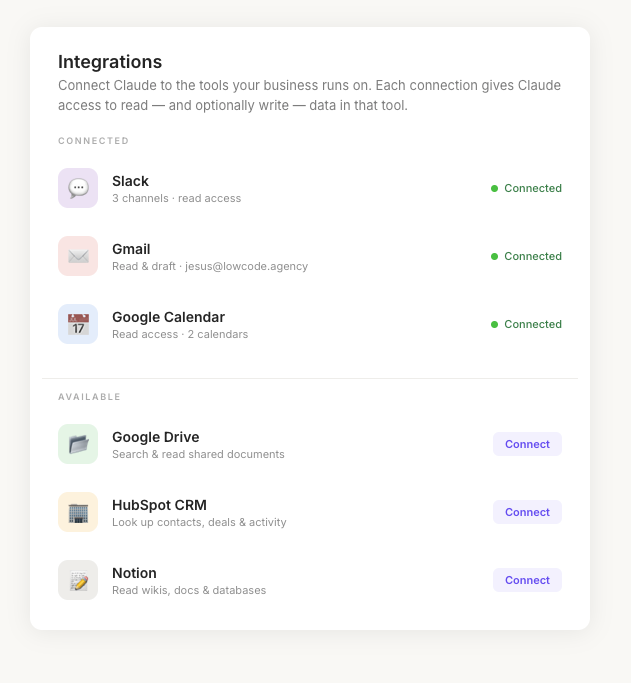
Claude reads and writes files on your computer directly through the desktop app. This is the simplest integration — the one you set up in Module 2.
Slack, email (Gmail, Outlook), and messaging integrations let Claude read conversations, draft responses, and post messages on your behalf. This is where most business owners see the fastest ROI — communication eats the biggest chunk of your day.
Google Calendar and Outlook integrations let Claude check your availability and understand your schedule. "Suggest three times next week when I'm free for 30 minutes" becomes one prompt.
Point Claude at a sales report and ask for trends. Give it your expense data and ask for a summary. Conversational analysis of the data you already have.
Claude can search the web and synthesize research. "Research the top five competitors in [market] and summarize their pricing" gives you a competitive brief without opening a browser.
Beyond connecting to tools, Claude Code has another extension system: plugins and skills.
A skill is like a recipe. It tells Claude: "When someone asks you to write a proposal, follow these steps, use this format, check these files, and produce this output."
Some skills come built in. Others are available in a public library. And you can create custom skills that match exactly how your business works.
Examples:
The plugin library has dozens of pre-built options. The real power comes when you customize them for your specific business.
Let's walk through connecting Slack — it's where most business communication happens, and the payoff is immediate.
Find the integrations section in Claude's settings. This is where you manage all connected tools.
Select Slack from the available integrations. Claude will walk you through authorizing access.
Choose what Claude can access. Start narrow — one or two channels where you spend the most time.
Test it. Ask Claude: "What are the most recent messages in #[channel-name]?"
Do something useful. "Summarize everything in #[channel] from the last 48 hours. What needs my attention?"
That's it. Claude now has eyes on your Slack — and can help you manage it instead of being managed by it.
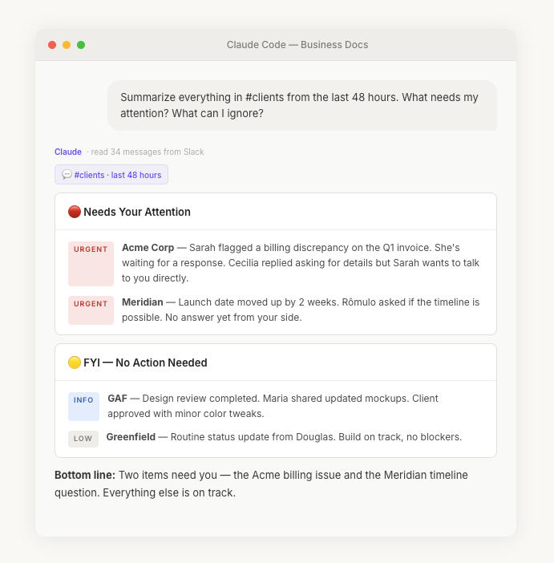
| Tool | What Claude Does With It |
|---|---|
| Local files | Reads proposals, templates, SOPs, brand docs |
| Slack | Summarizes channels, drafts messages, flags urgent items |
| Gmail / Outlook | Drafts emails, summarizes threads, handles follow-ups |
| Google Calendar | Checks availability, suggests times, preps for calls |
| Google Drive | Searches shared docs, updates files, creates new ones |
| CRM | Looks up contacts, checks deal stages, logs activity |
| Project tool | Checks task status, creates updates, flags overdue items |
Seven connections. Each one useful alone. Together, they give Claude a view of your business close to what a human executive assistant would have.
You knew this section was coming.
Setting up one integration is straightforward. Setting up seven that work together reliably? Different story.
Configuration isn't one-size-fits-all. Every CRM has different fields. Every Slack workspace has different channels. Each integration needs to be configured for your setup.
Permissions need thought. Should marketing's Claude see the sales pipeline? Should anyone's Claude have write access to client channels? These are business decisions, not technical ones.
Instructions multiply. Each integration needs its own context in your CLAUDE.md. "When you check the CRM, our deal stages are called X, Y, Z." "When you draft a Slack message for #clients, always use formal tone."
Maintenance is ongoing. Tools update. Someone reorganizes Drive. A new channel gets created. Every change can break an integration — or worse, produce silently wrong output.
Debugging is frustrating. When Claude gives wrong information from a connected tool — is it permissions? Configuration? Did the data change? Troubleshooting requires understanding both the tool and the integration layer.
One person connecting Slack to Claude? A weekend project. A 10-person team with seven integrations, proper permissions, and ongoing maintenance? That's an implementation project.
We've deployed Claude across organizations where every team member has a personal CLAUDE.md with role-specific instructions, a shared company CLAUDE.md with universal standards, all major tools connected and configured, custom skills for their most common workflows, and clear rules about what Claude can and can't access.
The result: proposals go out faster. Client follow-ups don't slip. Meeting prep happens automatically. The team communicates more consistently because everyone's Claude works from the same playbook.
Getting there takes planning, configuration, and someone who understands both the tools and the business. But the ROI is real — we've seen teams reclaim 5-10 hours per person per week once the setup is dialed in.
Next up: Module 5 — Settings, Security & Making It Your Own. The decisions that separate "playing with AI" from "running your business on AI."
By now, you've seen what Claude Code can do. It reads your files, follows your instructions, connects to your tools, and produces work that sounds like your business.
But here's the question that comes up in every conversation we have with business owners:
"How much should I actually trust this thing?"
It's the right question. And the honest answer is: it depends on how you set it up.
Claude Code can only access what you explicitly give it access to. It doesn't scan your entire computer. It doesn't read files outside the folders you've approved. It doesn't connect to tools you haven't authorized.
File access is folder-by-folder. You choose which folders Claude can read. Your proposals folder? Yes. Your personal documents? No.
Tool access is connection-by-connection. Each integration is a separate authorization. You can connect Slack without connecting email. You can give read access without write access. Revoke anytime.
Conversation data stays on your machine. Claude Code conversations are stored locally. They're not uploaded for training. They're not visible to Anthropic.
Claude can look at files and data but can't change anything. It reads documents, analyzes messages, checks your calendar — but can't send, modify, or create without asking first. Start here.
Claude can draft new files and propose changes — but asks for approval before saving or sending. You review, you decide. This is the "trust but verify" model where most business owners settle.
Claude acts without asking. Only appropriate for tasks where output is consistently reliable and the cost of a mistake is low. Saving a meeting prep doc? Fine. Sending a client email? Keep approval on.
Anthropic offers three tiers. Which one you use affects both quality and how fast you burn through your usage allowance.
| Model | Best For | Usage |
|---|---|---|
| Opus | Complex analysis, important deliverables, multi-step work | Highest |
| Sonnet | Daily work — emails, summaries, drafts, meeting prep | Moderate |
| Haiku | Quick tasks — reformatting, lookups, short drafts | Lowest |
Don't use Opus for everything. Match the model to the task. A Slack summary doesn't need your most powerful model. A board presentation does.
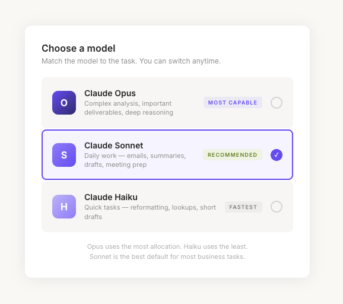
Claude Code uses more allocation than regular chat. Multi-step tasks consume more than quick questions. Here's how to get the most from your plan:
If your business handles regulated data (healthcare, finance, legal), talk to your compliance team before deploying AI tools. Enterprise plans offer additional controls, but the conversation needs to happen before deployment.
Claude Code has a memory system that retains information across conversations. This is different from CLAUDE.md (your explicit instructions) — memory is what Claude picks up from working with you.
When you correct Claude — "we never call clients 'users,' we call them 'partners'" — it saves that preference. Next conversation, it remembers.
Think of CLAUDE.md as the employee handbook and memory as the notes from their first month on the job. Both make Claude better. Together, dramatically better.
If you're deploying Claude Code beyond yourself, the stakes change. Everything we've covered has been from the perspective of one person. Here's where the real questions emerge:
None of these have purely technical answers. They're organizational decisions. This is — honestly — where most companies either get stuck or get it wrong. Not because the technology is hard, but because the change management is hard.
Each piece of this course — the CLAUDE.md, the integrations, the plugins, the permissions, the memory — is individually useful.
But the real power is compounding. When Claude has your business context AND is connected to your tools AND follows custom skills AND remembers your preferences AND is consistent across your team — the output quality isn't 5x better. It's qualitatively different.
Claude stops being "AI that helps with writing" and starts being "a system that runs parts of your business."
Getting to that compound effect is what separates companies that "use AI" from companies that "run on AI."
Next up: Module 6 — The Big Picture. What "done right" looks like, the real cost of doing it yourself, and how to decide what makes sense for your business.
You've made it through five modules. You know what Claude Code is. You've connected it to your files. You've written a CLAUDE.md. You understand integrations, plugins, permissions, and the decisions that come with team scaling.
You know more than 95% of business owners about this tool.
And if you're being honest, you're probably feeling one of two things:
"This is incredibly powerful. I can see how this saves me hours every week. I'm going to keep building."
"This is incredibly powerful. And also... there's more here than I expected. I'm not sure I have the time to set all of this up properly."
Both reactions are correct. They're not contradictory.
Claude Code is simple to start. You proved that in Module 2. But building a system that works reliably across your business, your team, and your clients — that's a different level of effort.
Here's what it actually takes to build a complete Claude Code setup for a small business (5-15 people) on your own:
Write CLAUDE.md files for your main work areas. Document your brand voice, processes, and team structure. Set up the desktop app and test on real work.
Connect your primary tools. Configure permissions. Write integration-specific instructions. Test each connection with real tasks. Troubleshoot what doesn't work the first time.
Install for each team member. Create role-specific CLAUDE.md files. Set up shared skills. Define permissions by role. Train everyone. Create a feedback loop.
Update files as the business evolves. Add new skills. Adjust permissions. Monitor usage and ROI. Maintain integrations as tools update.
What goes well: You learn the tool deeply. You make decisions that fit your business exactly.
What goes wrong: It takes longer than expected. Integrations are fiddly. Team adoption is uneven. CLAUDE.md files get outdated. Three months in, half the team is using Claude effectively and the other half has gone back to the old way.
We audit your business — tools, processes, team structure, communication patterns. We identify where AI gives the highest ROI and which integrations matter most. This is the phase most DIY setups skip.
We create your 14-Document Foundation: company profile, brand voice, team directory, SOPs, sales playbook, communication standards. Built with you, not for you.
Claude Code set up for every team member. CLAUDE.md files for each role. Integrations connected. Custom skills built for your top workflows. Permission structure implemented.
Hands-on sessions with real tasks. Everyone leaves with a working setup, practical skills, and confidence.
A 10-person team where each person spends 2 hours per day on tasks Claude could handle — emails, proposals, research, meeting prep, reporting, follow-ups.
2 hours/day × 10 people × 20 workdays = 400 hours/month of potential AI-assisted work.
If Claude makes that work 50% faster (conservative for well-configured setups), you reclaim 200 hours/month. At $50/hour burdened cost, that's $10,000/month in recovered capacity.
Subscription cost for 10 people: $300/month.
The ROI math isn't subtle. But you only get that ROI if the setup actually works. If half the team isn't using it, or the files are stale, or integrations aren't configured — you're paying for a tool running at 20% capacity.
The difference between a $300/month expense and a $10,000/month asset is entirely about implementation.
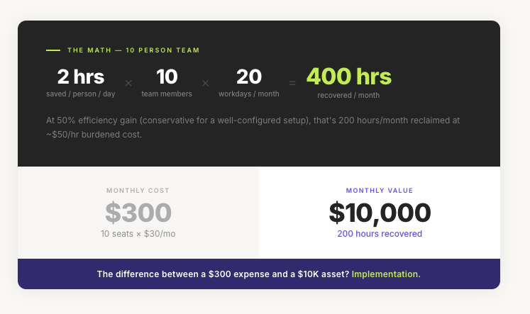
You have enough from this course to keep going. Refine your CLAUDE.md, connect one more integration this week, pick one workflow and build a skill for it, run it for 30 days and measure impact.
Right for: solo operators, small teams, people who enjoy learning tools hands-on.
Structured Claude Code training sessions for teams of 5-50. Everyone walks out with a working setup, custom CLAUDE.md files, integration configuration, custom skills, and hands-on practice with real tasks.
Right for: teams ready to adopt AI but need structure and guidance to do it consistently.
Complete 14-Document Foundation, full Claude Code deployment, integration architecture, custom skills and automation, team training, and ongoing monthly optimization.
Right for: companies that want to move fast, do it right, and not think about the technical details.
AI tools are evolving fast. What Claude Code can do today is meaningfully different from six months ago. And six months from now, it'll be different again.
The companies that win aren't the ones with the most advanced setup. They're the ones that built the foundation — the documentation, the processes, the team habits — that lets them adopt new capabilities as they emerge.
That 14-Document Foundation isn't just for Claude. It's for every AI tool you'll use in the next five years. Build it once, and you're ready for whatever comes next.
Whether you build it yourself or get help, start today. The gap between businesses that "use AI sometimes" and businesses that "run on AI" is widening every month.
Don't be on the wrong side of that gap.
30 minutes. We look at your setup, identify the highest-impact opportunities, and tell you honestly whether you need help or can do it yourself. No pitch. No pressure.
lowcode.agency/contactThank you for reading this course. If you found it useful,
share it with someone on your team — the more people who
understand what's possible, the faster your business can move.